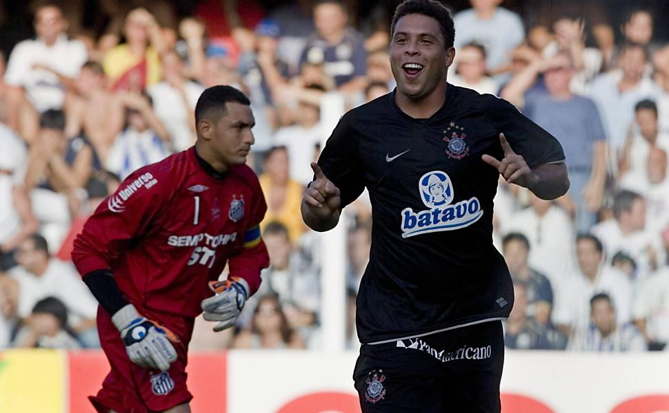

Às 20h30 do dia 1º de setembro, à luz de um lampião, na esquina das ruas José Paulino e Cônego Martins, no bairro do Bom Retiro, o grupo de operários formado por Anselmo Corrêa, Antônio Pereira, Carlos Silva, Joaquim Ambrósio e Raphael Perrone fundaram o Sport Club Corinthians Paulista. Com mais oito rapazes, foi formada a reunião dos primeiros integrantes e sócio fundadores do Timão, que teve seu nome inspirado na equipe inglesa Corinthian Football Club, que fazia excursão pelo Brasil. O presidente escolhido por eles foi o alfaiate Miguel Battaglia, que, já no primeiro momento, afirmou: “O Corinthians vai ser o time do povo e o povo é quem vai fazer o time”. Um terreno alugado na Rua José Paulino foi aplainado, virou campo e foi lá que, já no dia 14 de setembro, o primeiro treino foi realizado diante de uma plateia entusiasmada, que garantiu: “Este veio para ficar!”.
 1914 - O primeiro título
1914 - O primeiro título
Primeiro título do Sport Club Corinthians Paulista. Com 10 vitórias em 10 jogos disputados, o Timão marcou 37 gols e venceu a última partida por 3 a 0, contra o Lusitano, no Parque Antártica. O atacante Neco foi o artilheiro do torneio com 12 gols. O Alvinegro conquistou o Campeonato Paulista com uma rodada de antecedência. No dia 08 de novembro, a equipe derrotou o Campos Elyseos por 4 a 0 e sagrou-se campeã com a seguinte escalação: Aristides, Fúlvio e Casemiro González; Police, Bianco e César Nunes; Américo, Peres, Amílcar, Apparício e Neco.
1915 - Ano discretoO Alvinegro deixou a Liga Paulista de Futebol por conta de uma vaga desejada no campeonato da Associação Paulista de Esportes Atléticos, onde jogavam os grandes times da época. Porém, ficou de fora das duas competições.
1919 - Torneio InícioCampeão do primeiro Torneio Início da história do futebol de São Paulo. No mesmo ano, o Alvinegro conquistou a primeira vitória sobre o Palestra Itália em jogos de campeonato. No Parque Antártica, o ponta-direita Américo marcou o gol que definiu o resultado da partida: 1 a 0.
1920 - O artilheiro NecoO Corinthians foi bicampeão do Torneio Início. Com 24 gols, Neco foi novamente o artilheiro do Campeonato Paulista. O ataque alvinegro atingiu a marca de 75 gols em 17 jogos.
1921- Ficou no quaseNo Natal, o Timão precisava vencer o Palestra para ser campeão. O adversário, porém, levou a melhor e tirou o título do Alvinegro.
1922 - Centenário da IndependênciaO Corinthians foi campeão paulista no ano do Centenário da Independência do Brasil. O jogo, disputado em fevereiro do ano seguinte, terminou em 2 a 0 sobre o Paulistano no campo da Floresta.
1926 - Parque São JorgeO Corinthians comprou o terreno do Parque São Jorge, cujo campo seria reformado e reinaugurado dois anos depois.
1927 - Ano de participaçõesA equipe alvinegra não levantou nenhuma taça no ano, mas participou de dois campeonatos paulistas diferentes: o da Liga dos Amadores de Futebol (LAF) e o da Associação Paulista de Esportes Atléticos (Apea).
1928 - A fazendinhaNo dia 22 de julho, o Parque São Jorge foi reinaugurado no empate em 2 a 2 contra o América-RJ. Com a ilustre defesa formada por Tuffy, Grané e Del Debbio, o clube voltou a conquistar o Paulista no final do ano.
 1930 - O campeão dos campeões
1930 - O campeão dos campeões
Em 1930, o Timão fechou a década com seis conquistas do Campeonato Paulista em 10 disputados. Foi o segundo tricampeonato alvinegro. Logo depois, o Corinthians venceu o Vasco, campeão carioca, por 3 a 2. Por conta desse resultado, passou a ser chamado de “Campeão dos Campeões”.
1931 - Venda de estrelasDevido ao ótimo desempenho do clube, quatro titulares da equipe tricampeã foram vendidos para a Lazio, da Itália. Sem Del Debbio, Filó, Rato e De Maria, o Alvinegro ficou enfraquecido e não passou do sexto lugar no Paulista.
 1934 - o futuro ídolo Teleco
1934 - o futuro ídolo Teleco
No final do ano, o Corinthians ganhou um grande reforço: Teleco. O centroavante paranaense viria a se tornar um dos maiores artilheiros do clube.
1935 - Não deuO Alvinegro brigou pelo título paulista até o fim com os reforços de Jaú, De Maria e Brandão, mas terminou em terceiro lugar. Teleco foi o artilheiro da competição com nove gols.
 1938 - Nenhuma derrota
1938 - Nenhuma derrota
Com gol de Carlito, o alvinegro do Parque São Jorge empatou em 1 a 1 com o São Paulo e levou, de forma invicta, o bicampeonato paulista.
1939 - É tri!Pela terceira vez, o Coringão conquistou o tricampeonato estadual. Até hoje, nenhum clube venceu mais de três vezes seguidas o Campeonato Paulista.
1940 - PacaembuNo dia 28 de abril, o Timão inaugurou o estádio do Pacaembu, vencendo o Atlético-MG por 4 a 2.
 1942 - Dois campeonatos
1942 - Dois campeonatos
Naquele ano, o Timão conquistou dois títulos. O primeiro deles foi a I Taça Cidade de São Paulo, triangular com os três primeiros colocados do Paulista do ano anterior. Logo depois, venceu a Quinela de Ouro, disputada por Corinthians, Palestra, São Paulo, Flamengo e Fluminense.
1943 - Taça PaulistaAlém de ser bicampeão da Taça Paulista, a equipe fez novamente o artilheiro do estadual (Hércules, com 19 gols). Apesar disso, o título ficou com o São Paulo.
 1947 - Sempre na final
1947 - Sempre na final
O Corinthians levou o título da Taça Cidade de São Paulo e o vice-campeonato no Paulistão.
1948 - Vitórias internacionaisAlém de vencer novamente a Taça Cidade de São Paulo, o clube conquistou grandes vitórias em amistosos internacionais, realizados no Brasil, contra o River Plate (ARG) e o Torino (ITA).
1949 - ìdolos contratadosApós ficar somente em quinto lugar no Campeonato Paulista, a equipe do Parque São Jorge passou por uma renovação com a contratação de futuros ídolos do time, como Cabeção, Idário, Roberto e Luizinho.
1952 - Timão internacionalBaltazar foi o artilheiro do Paulista, com 27 gols, e um dos destaques do bicampeonato. O Timão também fez sua primeira excursão à Europa, com 12 vitórias, três empates e apenas uma derrota em duelos realizados na Suécia, Turquia, Dinamarca e Finlândia.
1953 - Ano de glóriasO Coringão venceu pela segunda vez o Rio-São Paulo e levou também a Pequena Taça do Mundo, jogando contra Barcelona (ESP), Roma (ITA) e a Seleção de Caracas, na Venezuela.
1954 - IV centenárioO Alvinegro foi campeão de três competições naquele ano. Além de vencer o Torneio Rio-São Paulo e o Torneio Charles Miller, o time levou o caneco do Paulista. Ano do quarto centenário desde a fundação da cidade de São Paulo, o campeonato de 1954 era muito desejado por todos os clubes. O Corinthians o conquistou tendo em seu último jogo a seguinte escalação: Gilmar, Rafael, Goiano, Homero, Idário, Alan, Nonô, Roberto, Simão, Luizinho e Cláudio.
 1958 - Timão no Mundial
1958 - Timão no Mundial
Além de ter vencido o Troféu Charles Miller e o Torneio Brasília, o clube do Parque São Jorge teve grande importância no primeiro título da Seleção Brasileira da Copa do Mundo. Na Suécia, o goleiro Gilmar e o lateral esquerdo Oreco representaram o país e o Corinthians na conquista inédita.
1959 - InesquecívelVicente Matheus foi eleito presidente do Sport Club Corinthians Paulista. Ficou no Timão durante oito mandatos.
1960 - Sem consquistasO Timão contratou Almir, o “Pelé Branco”, pela quantia recorde de 8 milhões de cruzeiros. Mas a equipe não foi tão bem no Paulista e ficou somente com o terceiro lugar.
 1964 - Luta até o fimCom a volta do ídolo Luizinho, o Timão lutou pelo título estadual até o fim, mas não levou.
1965 - RivellinoCom Rivellino na equipe, o Timão venceu o Torneio Pentagonal do Recife. Além disso, tornou-se o primeiro clube a vestir a camisa da Selecão no exterior, mas saiu derrotado pelo Arsenal por 2 a 0 em Londres.
1966 - Rio-São Paulo divididoO Corinthians foi campeão do Torneio Rio-São Paulo ao lado de Botafogo, Santos e Vasco por falta de datas para disputar os desempates. Naquele ano, o clube havia contratado Ditão, Nair e Garrincha, que formavam um time fortíssimo.
 1969 - Ano tirste
1969 - Ano tirste
Com o falecimento do lateral Lidu e do ponta Eduardo, o Timão perdeu a liderança do Paulista e não conquistou a competição.
1970 - Corinthians é BrasilNaquele ano, o Corinthians contava com três jogadores da Seleção Brasileira: o goleiro Ado, o meia Rivellino e o lateral Zé Maria. Foi em 70 que o Brasil conquistou o tricampeonato Mundial.
1971 - O primeiro BrasileirãoNo primeiro Campeonato Brasileiro da história, o Alvinegro dominou a primeira fase e foi líder, mas não teve um bom desempenho no final da competição.
 1975 - Desempenho baixo
1975 - Desempenho baixo
Basílio e Cesar Maluco foram os reforços da temporada, mas o Alvinegro ficou apenas com o quarto lugar no estadual e em sexto no nacional.
Primeiro jogo do Timão fora da cidade de São Paulo. Na manhã de 17 de setembro, vitória sobre a Ponte Preta em Campinas por 1 a 0.
1912 - Jogos na várzeaRegistro de jogos na várzea cujos resultados não foram encontrados. Os adversários foram Paulista, Concórdia, Botafogo, Minas Gerais, Maranhão e Vila Mariana.
1913 - Estreia no PaulistaPela primeira vez, o Corinthians participou do campeonato da Liga Paulista de Futebol. O Alvinegro terminou em quarto lugar entre cinco equipes.
 1916 - Campeão
1916 - Campeão
De volta ao campeonato da Liga Paulista de Futebol, o Timão foi novamente campeão com 100% de aproveitamento: nove vitórias em nove jogos. Apparício foi o artilheiro do torneio com sete gols.
1917 - Rivalidades antigasO Corinthians disputou pela primeira vez o Campeonato Paulista ao lado de seus maiores rivais na época. Terminou em quarto lugar, atrás do Paulistano (campeão), do Palestra Itália (vice) e do Santos (terceiro).
1918 - O primeiro estádioEm suas horas de folga, os jogadores alvinegros construíram o gramado do primeiro estádio oficial corinthiano. Nomeado como Ponte Grande, a casa do Timão ficava onde hoje é a Ponte das Bandeiras, na Marginal Tietê.
 1923 - Bicampeonato Paulista
1923 - Bicampeonato Paulista
Pela primeira vez, o clube foi bicampeão paulista. Líder do turno inicial, o time começou o segundo com seis pontos de vantagem e só precisaria vencer três dos sete jogos restantes para levar o caneco.
1924 - O primeiro triMantendo a hegemonia no estadual, o Alvinegro conquistou o primeiro tricampeonato paulista. A Revolução Tenentista fez o torneio ser interrompido, mas, na volta, o título foi garantido com uma vitória sobre o Paulistano por 1 a 0.
1925 - Por poucoO Timão quase chegou ao tetra. O Paulistano se retirou do campeonato, mas os resultados de seus jogos não foram descontados. Caso tivessem sido, o clube terminaria na frente do campeão A. A. São Bento.
 1929 - Mosqueteiro
1929 - Mosqueteiro
O Alvinegro foi bicampeão do Campeonato Paulista novamente e, dessa vez, com 100% de aproveitamento: sete vitórias em sete jogos. No mesmo ano, a equipe venceu sua primeira partida internacional. Na ocasião, o Corinthians venceu o Barracas (ARG) por 3 a 1 no Parque São Jorge. Apparício, Rato e Rodrigues marcaram os gols da virada. No dia seguinte, o jornalista Thomaz Mazzoni, do impresso A Gazeta, relatou a partida destacando a “fibra de mosqueteiro” demonstrada pelos jogadores. Nesse mesmo ano, a Gazeta criou diversos mascotes aos times e, consequentemente, atribuiu o Mosqueteiro ao Timão.
 1932 - Estadual fraco
1932 - Estadual fraco
Com uma campanha discreta, o Corinthians terminou o campeonato estadual em quarto lugar. Em meio à Revolução Constitucionalista, a competição foi disputada em somente um turno, vencido pelo Palestra.
1933 - Técnico do UruguaiO Timão contratou seu primeiro técnico de futebol remunerado, o uruguaio Pedro Mazzulo. A campanha no Paulista foi novamente o quarto lugar.
1936 - InvictoInvicto! Durante o ano inteiro, o Corinthians não perdeu nenhum jogo. Foram 28 vitórias e três empates, incluindo as partidas amistosas. O Timão venceu o primeiro turno do Paulista, mas perdeu a final para o Palestra, campeão do returno, já em 1937.
1937 - Mais um PaulistãoNo campeonato estadual daquele ano, o clube do Parque São Jorge levou o caneco. O duelo mais marcante foi o da vitória sobre o Palestra por 1 a 0 na antepenúltima rodada, com gol de Teleco.
 1941 - Artilharia e título
1941 - Artilharia e título
Pela quinta vez, Teleco foi artilheiro do Paulistão. O atacante marcou 26 gols e foi um dos grandes nomes da conquista da competição. O Corinthians conquistou o campeonato com duas rodadas de antecedência ao derrotar o Santos por 3 a 2 na Vila Belmiro.
 1944 - Torneio Início
1944 - Torneio Início
Naquele ano, o Timão contratou o zagueiro Domingos da Guia, venceu o Torneio Início e ficou em terceiro lugar no Paulista.
1945 - O artilheiro ServílioApesar de não ter faturado nenhum título, o Coringão novamente foi dono do artilheiro do Paulista: Servílio, com 17 gols.
1946 - Chegou pertoMesmo com 18 vitórias e apenas duas derrotas em 20 jogos, o Alvinegro ficou com o segundo lugar no estadual.
 1950 - O primeiro Rio-São Paulo
1950 - O primeiro Rio-São Paulo
Com 20 gols em sete jogos, o Timão conquistou o primeiro Torneio Rio-São Paulo de sua história. O último jogo terminou no empate em 1 a 1 com o Botafogo no Pacaembu. A escalação do duelo foi Bino, Newton e Belfare; Idário, Touguinha e Hélio; Cláudio, Luizinho, Baltazar, Nelsinho e Noronha.
1951 - O ataque dos 100 golsApós 10 anos, o Alvinegro foi campeão paulista novamente. O ataque formado por Cláudio, Luizinho, Baltazar, Carbone e Mário fez 103 gols em apenas 30 jogos. No mesmo ano, o Corinthians disputou sua primeira partida fora do Brasil. No Torneio Internacional/Quadrangular de Montevidéu, o clube derrotou o Combinado Uruguaio por 4 a 1 no estádio de Montevidéu.
 1955 - Em cima dos lusos
1955 - Em cima dos lusos
Com uma vitória por 2 a 1 em cima do Benfica (POR) no Pacaembu, o Timão conquistou o Torneio Internacional Charles Miller.
1956 - Taça dos invictosPela primeira vez, o Corinthians levou a cobiçada Taça dos Invictos, por conta de seus 25 jogos sem derrota no Paulista. Foram 17 vitórias e oito empates. Apesar disso, o Alvinegro terminou o campeonato apenas na terceira posição.
1957 - Dono definitivoO Coringão ficou com o segundo lugar no Campeonato Paulista, mas tornou-se dono definitivo da Taça dos Invictos. Foram 35 jogos sem perder na competição, com 25 vitórias e 10 empates.
 1961 - Campanha fraca
1961 - Campanha fraca
Com uma campanha discreta, o Alvinegro terminou o Paulista na sexta posição.
1962 - I Taça São PauloNaquele ano, o clube foi campeão da I Taça São Paulo, torneio eliminatório envolvendo equipes de todas as divisões de SP.
1963 - Três comandantesO Corinthians foi comandado por três técnicos em 1963: Fleitas Solich, Rato e Del Debbio. Porém, foi somente o nono colocado entre os 16 participantes do Paulistão.
 1967 - Não foi longe
1967 - Não foi longe
Liderou a primeira fase do torneio Robertão, mas não teve bons resultados no quadrangular final.
1968 - A quebra do tabuCom gols de Paulo Borges e Flávio, o Coringão venceu o Santos por 2 a 0 e quebrou um tabu de 11 anos sem derrotar a equipe do litoral paulista. Na noite de 06 de março, a equipe alvinegra entrou no Pacaembu com a seguinte escalação: Diogo, Osvaldo Cunha, Ditão, Luís Carlos e Maciel; Édson Cegonha e Rivelino; Buião, Paulo Borges, Flávio e Eduardo.
 1972 - Passou perto
1972 - Passou perto
Semifinalista no Brasileiro, o clube perdeu para o Botafogo a chance de decidir o título contra o Palmeiras.
1973 - Ano discretoCom o técnico “linha-dura” Yustrich, o time do Parque São Jorge teve uma campanha discreta no Paulista (quarto lugar) e no Brasileiro (12º lugar).
1974 - Final complicadaO Timão voltou a disputar o título paulista diretamente em um jogo após 17 anos. A derrota para o Palmeiras na decisão resultou na saída de Rivellino para o Fluminense.